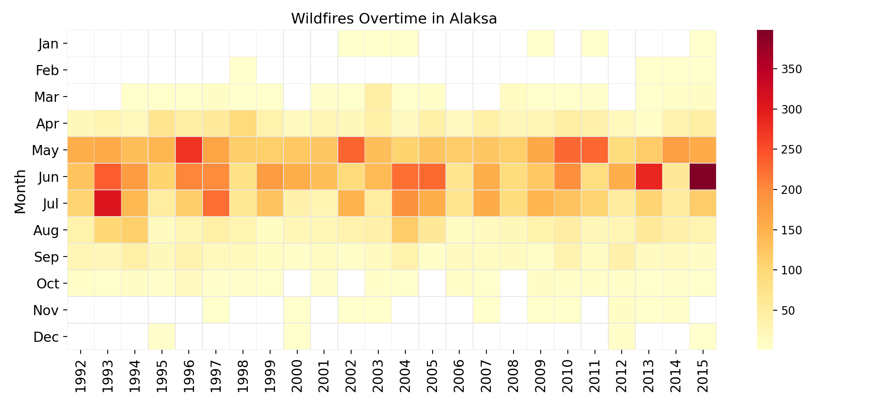
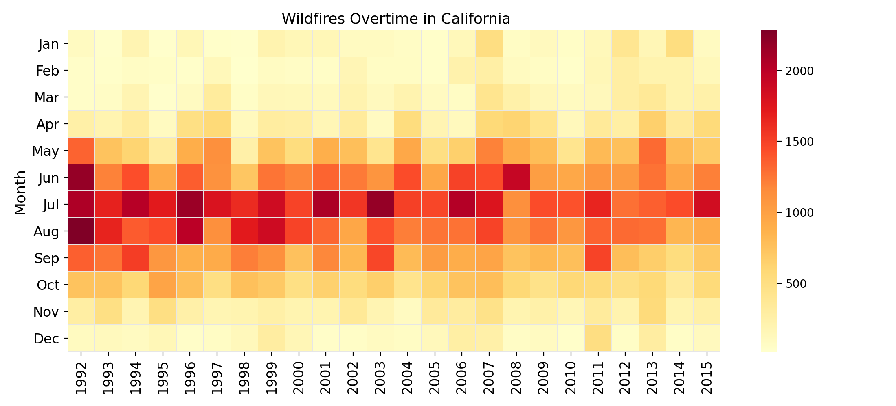
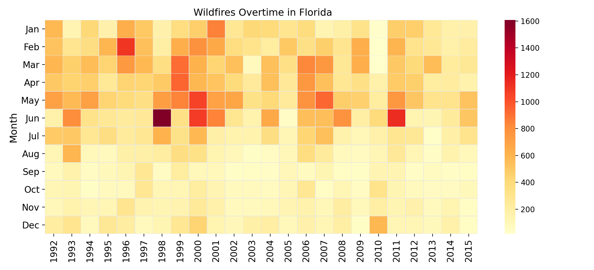
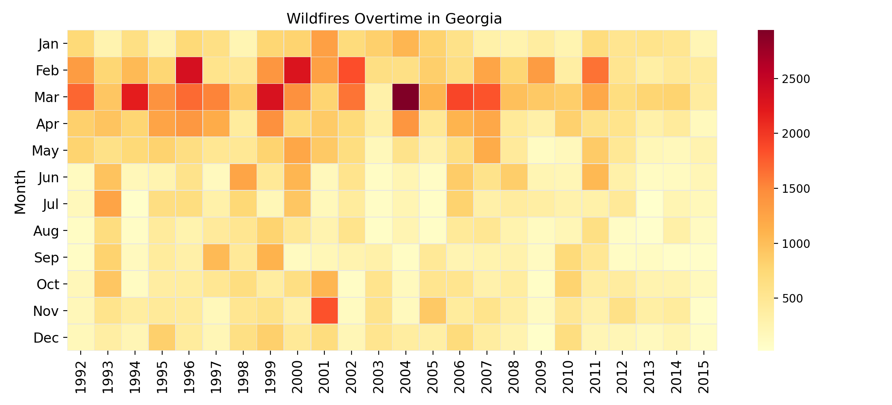
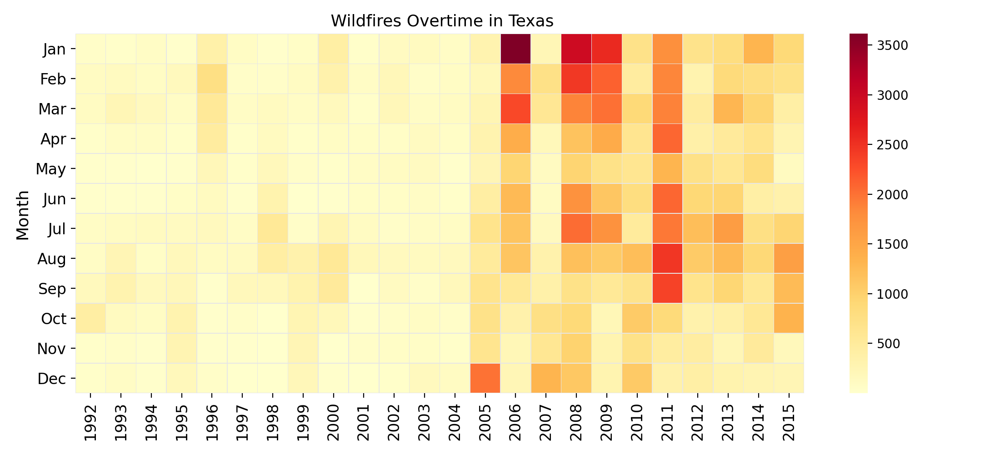
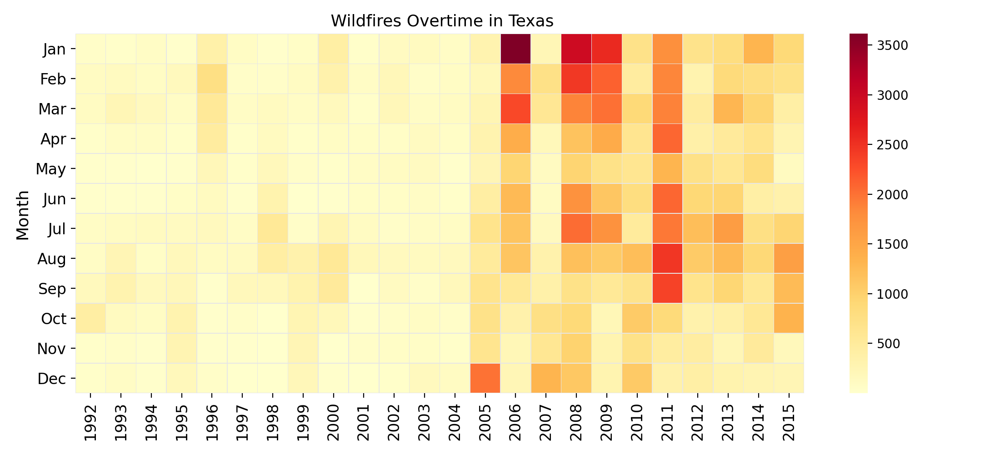

Background
Wildfires are a growing natural hazard in the western regions of the United States, which pose a great threat to life, property and native ecosystems. Due to the destructive natures of these fires and their increasing presence, it is integral to analyze and explore patterns of this phenomenon; especially, within the context of climate change. Wildfire data from 1992 to 2015 in the United States was examined to analyze the trends and causes of wildfires overtime. This data was acquired from reporting systems at the federal, state, and local level and was generated to support the National Fire Program Analysis (FPA) system.
Wildfires By Region
Interactive Maps
Click on each button below to view the interactive Wildfire maps.
Bubble Map of All Individual Wildfires Choropleth Map of U.S. Wildfires Per State Acreage Heatmap of Wildfires Over Time Top 20 Largest FiresTotal Wildfires and Average Burn Size
Click on the individual labels in the legend to view Total Wildfires and Average Size seperately. However over each bar for individual state data
Top Wildfires States Over Time and Their Wildfire Seasons
    
